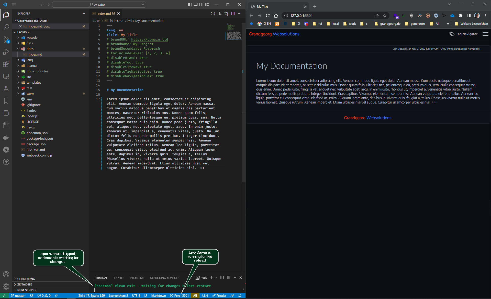

EasyDoc

created by:
Grandgeorg
Websolutions
Features
Generates completely local HTML Website.
- You can just open the resulting HTML-files in the
wwwdirectory locally in a browser. - You can also drop / push the contents of the
wwwdirectory to a HTTP-Server.
Rich markdown support and code highlighting features
- Uses markdown-it with plugins for markdown to HTML rendering
- Uses Prism with plugins to highlight code.
Fully configurable and customizable
- Configure global and per page settings (see reference for details).
- Customize all components as you like.
- Edit SCSS files (under
src/scss) to change theme. - Edit
app.jsto change navigation etc. app.jsuses pure vanilla JavaScript without any dependencies.
Built in Navigation
- Table of contents on pages
- Individual site navigation
- Tab Navigator module
Install
Download latest release and unpack it or clone with git:
# clone via https:
git clone https://git.grandgeorg.de/Viktor/easydoc.git
# or clone via SSH (if you have a key):
git clone git@git.grandgeorg.de:Viktor/easydoc.git
Change into easydoc directory and run install:
cd ./easydoc/
npm install
# start vscode if you like ...
code .
Usage
# watches on file changes and runs build:
npm run watch
# or build one time
npm run build
🖿 easydoc directory structure
🗁 easydoc
├🗀 .git
├🗀 .vscode
├🟢 docs
│ └🗏 index.md 🖤
├🗀 lang 🖊️
├🗁 manual 📌
│ ├🗀 assets
│ ├🗀 img
│ ├🗏 easydoc.html
│ ├🗏 easydoc.md
│ ├🗏 reference.html
│ └🗏 reference.md
├🗀 node_modules
├🗀 src 🖊️
├🗀 templates 🖊️
├🔵 www
│ ├🗀 assets 🖊️
│ ├🟢 img
│ ├🗏 index.html 🖤
│ └🗏 meta.js 🖤
├🗏 .env ✏️
├🗏 .gitignore
├🗏 .hintrc
├🗏 index.js 🖊️
├🗏 nav.js ✏️
├🗏 nodemon.json
├🗏 package.json
├🗏 package-lock.json
└🗏 webpack.config.js
╭──────────────────────────═━┈💬┈━═──────────────────────────╮
│ 🟢 input directories. Start creating files here. │
│ 🔵 output directory. Html files will be generated here. │
│ ✏️ configure EasyDoc │
│ 🖊️ change EasyDoc │
│ 📌 It's me. You are reading these documents right now. │
│ 🖤 Remove these documentation files for a blank start. │
╰──────────────────────────═━┈💬┈━═──────────────────────────╯
For configuration and further usage refer to the EasyDoc Reference
Workflow
For the most convenient use do the following:
- Start Visual Studio Code from the
easydocdirectory. - Start the Live Server extention.
- Run
npm run watch. - Put the vscode and the browser window side by side.
- Start creating and editing markdown files in
docsdirectory. - Use git if working in a team.
Workspace Example Screenshot

Todos
- make CSS print version.